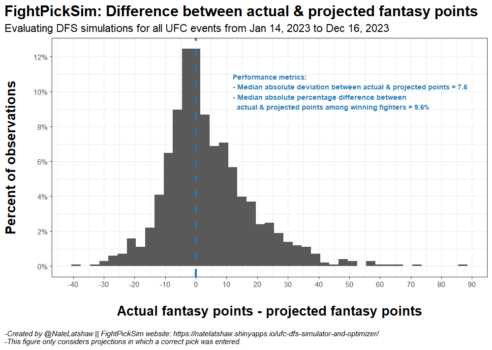
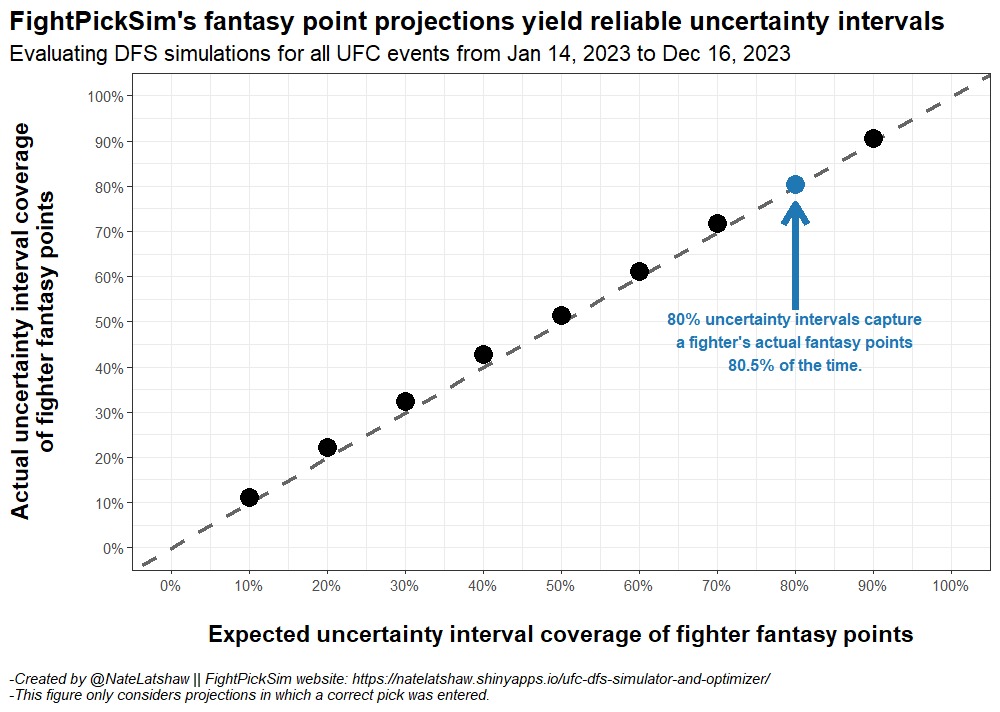
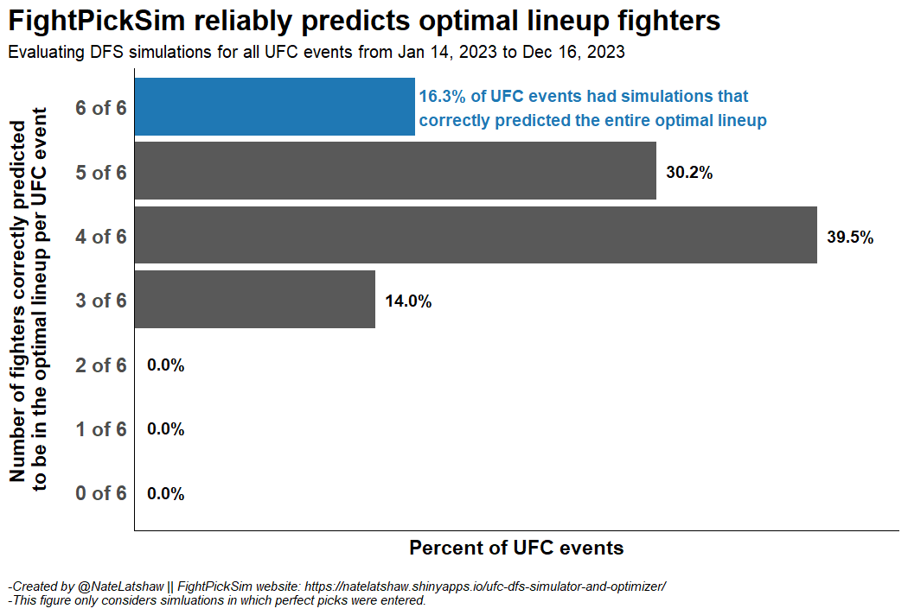
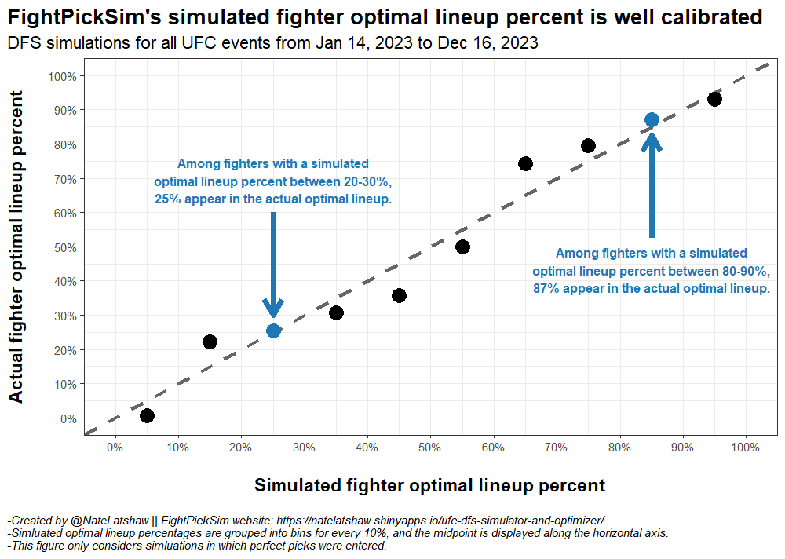

Introduction
This post introduces FightPickSim, a new UFC DraftKings Daily Fantasy Sports (DFS) tool I built to perform fantasy point projections, event simulations, and lineup optimization. FightPickSim is an interactive website built using R and R Shiny that can be found here. This post documents how the tool works and how it has performed historically.
First, for those unfamiliar with DFS, DraftKings hosts contests in which players construct a lineup of fighters for an upcoming UFC event, and each player’s objective is to build the lineup that scores the most fantasy points.
Each lineup consists of six fighters, and each fighter has a different salary. When selecting a lineup, each DFS player is free to select any combination of fighters as long as the total salary for all six fighters does not exceed a fixed salary cap.
Then, as the event plays out, fighters earn points for accumulating statistics, like significant strikes landed and control time, and for winning. Additional bonus points are awarded for finishes, and finishes in earlier rounds earn more points than finishes in later rounds.
The goal of FightPickSim is to help users construct lineups that outperform their peers by providing precise fantasy point projections, reliable projection uncertainty intervals, accurate optimal lineup forecasts, and well-calibrated optimal lineup probabilities.
How FightPickSim works
FightPickSim requires a user to enter a pick for every bout in an upcoming UFC card. That is, each user must select which fighter will win and what the method of victory will be in each bout. Then, using those picks, FightPickSim performs the following:
Monte Carlo simulations: The entire card is simulated 10,000 times.
Fantasy point projections: A DraftKings fantasy points projection for each fighter is generated in each iteration of the simulation. An uncertainty interval is computed alongside each projection to denote the probability that each fighter’s actual fantasy points land within that interval.
Lineup optimization: The projected optimal lineup is found by taking each fighter’s median projection across all iterations. Each fighter’s optimal lineup percent is calculated by generating an optimal lineup within each iteration and then computing the percent of all iterations in which each fighter appeared in an optimal lineup. Optimal lineup percent measures the probability that each fighter will appear in the true optimal lineup based on the user’s picks.
How FightPickSim performs
Unlike DFS for most team sports, selecting a lineup of winners is crucial in UFC DFS. In the NFL, for example, selecting a quarterback from a team that loses can actually be an advantage if that team trails the entire game and decides to throw the ball more often than they otherwise would. The same does not hold for UFC DFS due to fighter win bonuses.
Hence, FightPickSim’s performance is dependent on a user entering high-quality picks, which is an unavoidable limitation. All performance metrics and figures in this post assume a user entered perfect picks. That of course is a very strong assumption but is the only way to reasonably quantify this tool’s potential performance. It should still hold in the long run that if a user enters imperfect but above average picks, then FightPickSim will return above average projections and lineup suggestions.
Precise fantasy point projections
Rather than generating a single fantasy point projection for each fighter, FightPickSim performs a Monte Carlo simulation of a UFC event using the user’s picks. That is, FightPickSim simulates the entire card 10,000 times and draws a projection for each fighter in each iteration of the simulation. This yields a distribution of projected fantasy points for each fighter, which unlocks deeper insight into the number of points each fighter may earn and allows us to quantify the uncertainty around these projections.
Using all 2023 UFC events as an evaluation period, the median absolute deviation between each fighter’s actual fantasy points and FightPickSim’s median projected fantasy points was 7.6, as seen in the figure below. Likewise, among winning fighters (i.e. the fighters we care the most about), the median absolute percentage difference between each fighter’s actual fantasy points and FightPickSim’s projected points was 9.6%. The figure below shows the distribution of differences between actual and projected fantasy points for all fighters.
This distribution is relatively centered around 0, which means projections overestimate actual performance nearly as often as they underestimate it. Given the variability in fighter performances in the UFC, I believe these performance metrics show that FightPickSim’s projections are strong.

Reliable projection uncertainty intervals
FightPickSim leverages the distribution of projections generated in the Monte Carlo simulation to construct uncertainty intervals around each fighter’s projection. That is, based on the user’s picks, each fighter is given an interval such that there is, say, an 80% chance that the fighter’s actual fantasy points land within that interval.
In the FightPickSim tool, users can adjust the coverage of the uncertainty interval, so if a user wants an interval that has a 90% chance of containing the fighter’s actual fantasy points, that may be selected. However, there is no free lunch – an interval that has a 90% chance of containing a fighter’s actual fantasy points will be wider than an interval with an 80% chance. As the likelihood of containing the actual value increases, the width of the interval increases as well, so there is a tradeoff between coverage and precision.
The most important aspect of FightPickSim’s uncertainty intervals is that they are reliable and well calibrated. That is, among all uncertainty intervals that claim to contain a fighter’s actual fantasy points with 80% probability, we see in the figure below that ~80.5% of these intervals contained the actual value. The same holds for intervals with different expected coverage. Hence, users can trust the coverage claimed by these intervals.

Accurate optimal lineup forecasts
In DFS, the optimal lineup is the set of six fighters who scored the most total fantasy points with a total salary that does not exceed the salary cap. Put more simply, the optimal lineup is the best possible lineup a DFS player could select. Since there are so many possible combinations of lineups, most lineups that win money in DFS are suboptimal lineups, but the optimal lineup is still what every DFS player seeks.
FightPickSim leverages a user’s picks and the subsequent fantasy point projections to forecast the optimal lineup. Methodologically, this is a relatively straightforward optimization problem where the projections are maximized subject to the constraints of having to select six fighters with a total salary that does not exceed the salary cap.
In practice, FightPickSim reliably forecasts optimal lineups. The figure below shows the frequency in which each number of possible optimal lineup fighters was correctly predicted for a UFC event. That is, all six optimal lineup fighters were correctly predicted by FightPickSim in 16.3% of 2023 UFC events, so if a user had input perfect picks for those events, FightPickSim would have provided the full optimal lineup. For nearly half of the 2023 UFC events, FightPickSim was able to forecast at least five of the six optimal lineup fighters, and it never correctly forecasted fewer than three. Therefore, users that bring correct picks to FightPickSim can expect to build lineups with optimal lineup fighters.

Well-calibrated optimal lineup probabilities
The aforementioned optimal lineup forecasts consist of binary predictions denoting whether or not each fighter will land in the optimal lineup, but perhaps more importantly, FightPickSim is able to provide a well-calibrated probability that each fighter will appear in the optimal lineup based on a user’s picks. That is, in the FightPickSim Monte Carlo simulation, 10,000 optimal lineups are computed, and the percent of optimal lineups that include a given fighter, known as optimal lineup percent, is calculated.
The figure below shows that optimal lineup percent is well calibrated. For instance, among all fighters with an optimal lineup percent between 80-90%, 87% appear in the actual optimal lineup. A similar relationship exists for every other bin between 0-100%, which shows that optimal lineup percent can be treated as a reliable probability that a fighter will appear in the true optimal lineup.

Conclusion
To recap, FightPickSim is a UFC DraftKings DFS projection, simulation, and optimization tool. For users that input correct picks into the tool, FightPickSim provides:
- Precise fantasy point projections
- Reliable projection uncertainty intervals
- Accurate optimal lineup forecasts
- Well-calibrated optimal lineup probabilities
FightPickSim was built using R and R Shiny and is available to check out here, and if you have any questions or feedback, feel free to reach out to me on Twitter.